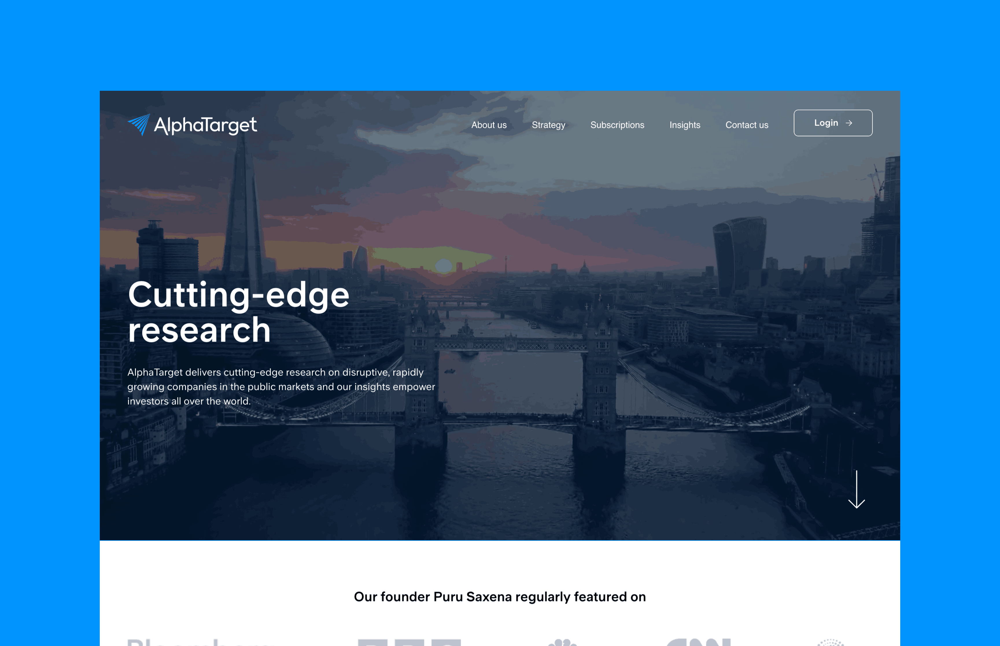
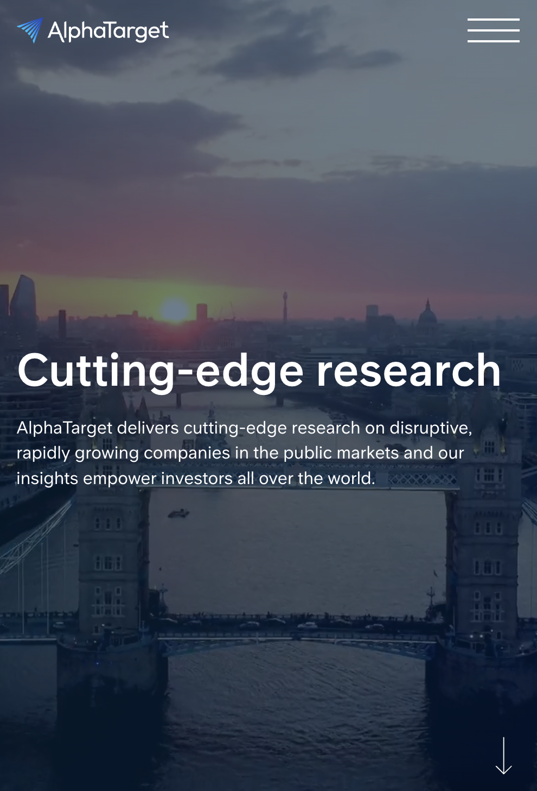
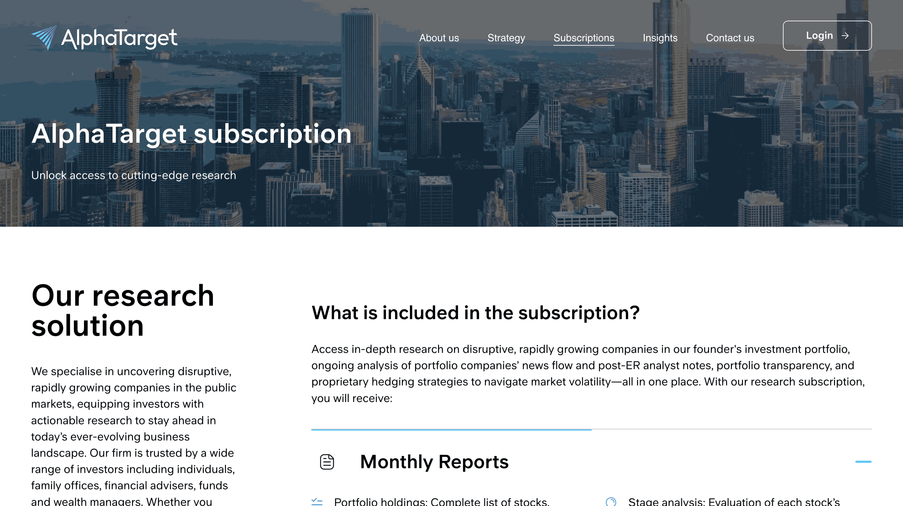

Founded by seasoned investment professional Mr. Puru Saxena. He has long been a trusted source of real-time market insights to investors. As the subscriber base steadily grew, AlphaTarget set out to enhance its infrastructure so that it could continue to deliver with consistency, even at scale.


AlphaTarget’s market updates are time-sensitive, particularly for subscribers who rely on alerts for stock market insights for educational purposes. But AlphaTarget’s email dispatch was capped at 100 emails per minute, making bulk sends a challenge. Email delivery also relied on, which triggered tasks only when page visits occurred. As a result, during quiet periods or high-volume publishing (e.g., trading alerts and weekly updates), some emails were skipped. To resolve these issues, we built a dedicated email dispatch function:
This function:
> Removes WP-Cron dependency: Email dispatch is now independent of page visits.
> Increases capacity: The new system processes 50 emails every 5 seconds, achieving 600 emails per minute, 6x faster than before.
> Improves reliability during multiple post publishing: Reworked logic ensures no alerts are skipped when posts are published back-to-back.
As AlphaTarget’s audience grew, so did the need for a more robust foundation. AlphaTarget made a strategic decision to move to WordPress VIP from Hetzner, gaining enterprise-grade security, improved performance, and long-term reliability.
We began the migration with AlphaTarget’s database and content, followed by all plugins and theme configurations, ensuring full compatibility with the new infrastructure. The final phase included rigorous testing to validate site performance, security, and functionality, ensuring a smooth experience for AlphaTarget’s subscribers and backend teams. With this successful on-time, on-budget lift-and-shift migration to WordPress VIP, AlphaTarget now operates on a faster, more secure platform built to scale.

Our partnership with AlphaTarget goes well beyond technical solutions, it was about enabling their growth by optimizing their WordPress ecosystem for performance, scalability, and reliability. Working with AlphaTarget team has been a pleasure. We are proud to contribute to their mission, and we’re excited to keep building what’s next. AlphaTarget’s platform is now faster, more stable, and built for what’s ahead.